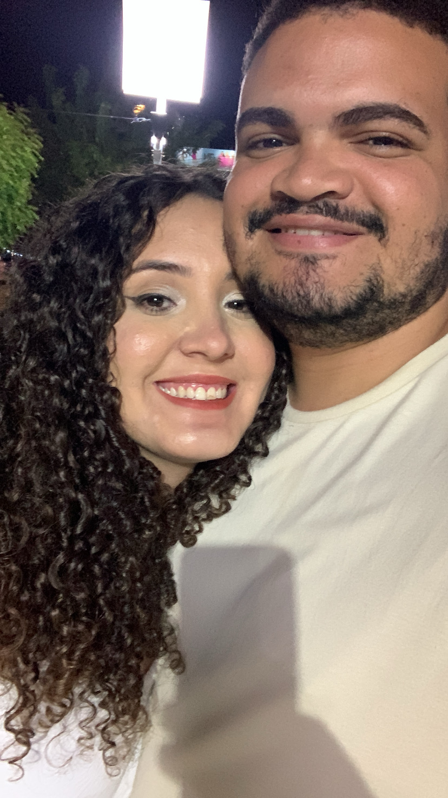
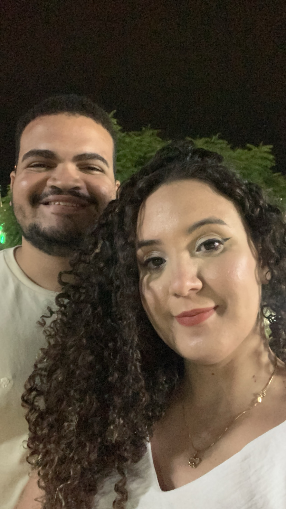
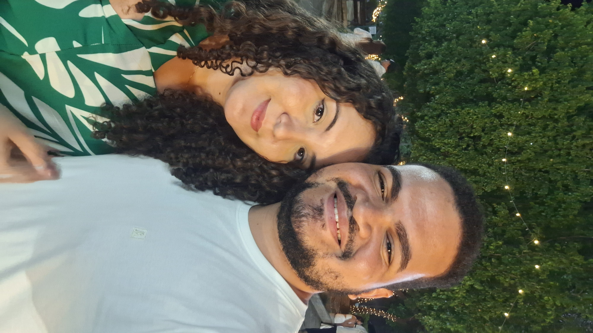
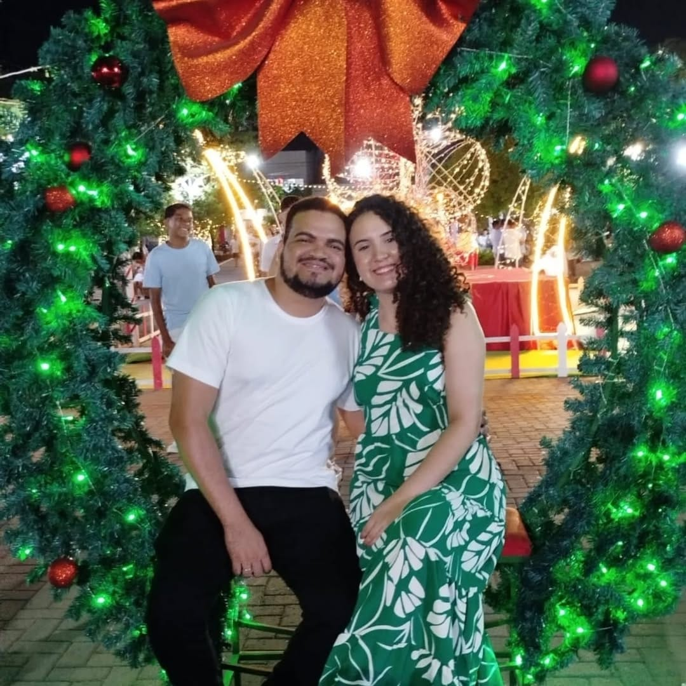
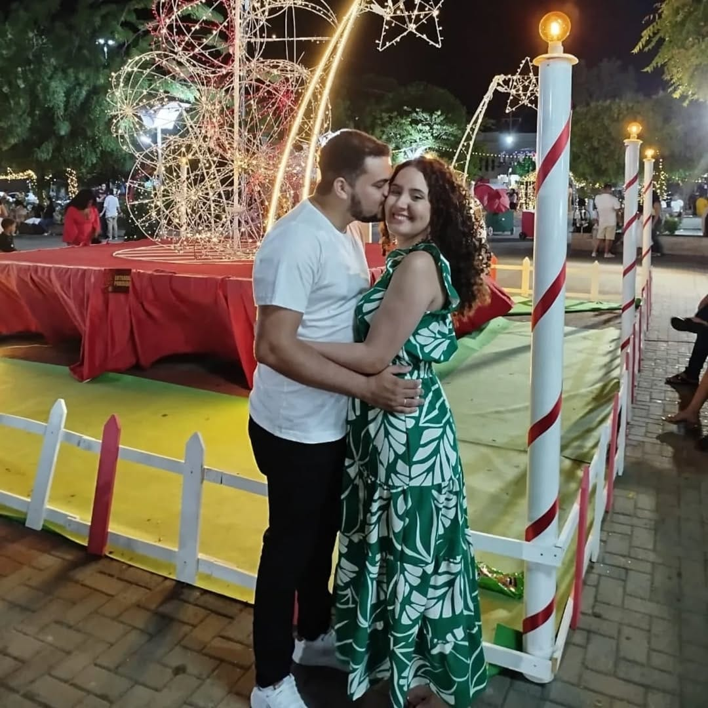
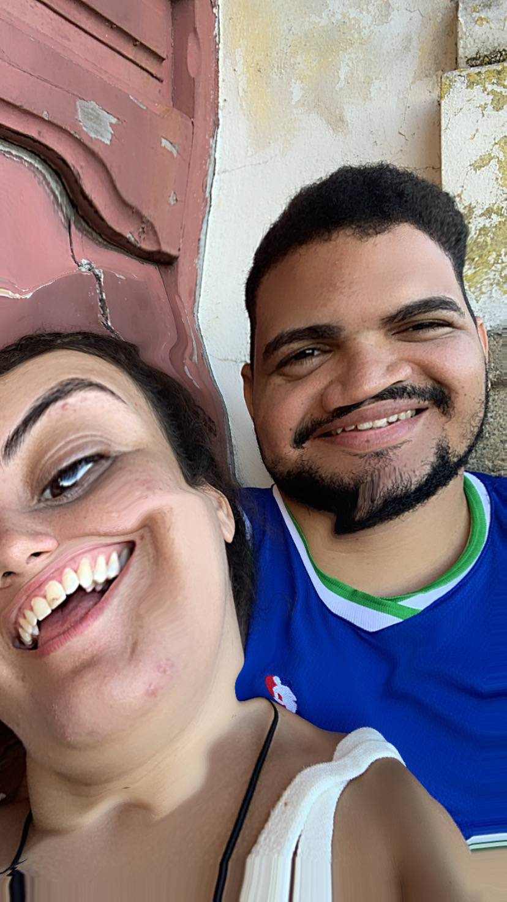

Dois anos te amando incansávelmente

Carregando...
É, meu amor. Chegou o tão esperado dia. O dia 01 de Abril. Para muitos, isso é simbolizado como o famoso "dia da
mentira", porém,
pra mim, é a maior verdade que poderia acontecer na minha vida. A maior verdade que eu poderia vivenciar, a maior
verdade que Deus me revelou, o nosso amor.
Sério, em pensar que, mesmo com aquele começo conturbado, difícil, de tantas coisas que passamos pra chegar até
aqui, quem diria que chegaríamos fortes e cada vez mais unidos, né?
Então, te confesso que eu diria, hahaha. Eu sempre confiei e acreditei no nosso amor, tanto é que eu sempre
insisti, não é? Aquela garota que por dentro era doce e meiga, mas,
por fora sendo a "frozen", bem fechada e congelada, não esperaria que eu realmente fosse conseguir descongelar
ela. Pois é, eu consegui, eu consegui e esses foram, até aqui, os melhores 2 anos que eu já vivi.
Sério, eu não consigo mensurar o quanto eu te amo, o quanto eu te respeito, o quanto eu te admiro e o quanto eu
acho que você é a mulher da minha vida.
A certeza que eu tenho do nosso amor, é algo como MIL MILHÕES BILHÕES. Ou então, aproveitando a oportunidade, vou
te apresentar ele, o famoso "GUGOL", isso mesmo,
aquele número lá gigantesco. Olha como ele é: (10^100), ou seja, um 10 elevado a 100, que nada mais é do que um 10
acompanhado de 100 zeros. Tipo assim:
10.000.000.000.000.000.000.000.000.000.000.000.
000.000.000.000.000.000.000.000.000.000.000.
000.000.000.000.000.000.000.000.000.000.000.
Um fato nerd, pra não perder o costume: esse número é sistematicamente chamado de "dez duotrigintilhões" e tem uma
fatoração prima de (2^100) * (5^100), que bizarro né?
Mas, voltando ao assunto principal, o nosso segundo ano de namoro. Estamos nos aproximando cada vez mais do nosso
noivado (sério, tá muito perto...) e eu fico um pouco assustado,
não por noivar com você e evoluir para um casamento, pra isso eu tô mais do que disposto e dedicado... mas, eu
fico assustado e nervoso por ter medo de não ser o suficiente pra você,
eu quero ser o melhor namorado, melhor noivo, melhor marido e o melhor pai para os nossos filhos, e eu tenho me
dedicado em te dar o melhor de mim todos os dias durante esses dois anos.
A gente passou por tanta coisa, né? Mas, estamos aqui, nesse restaurante hoje, pra comemorar o dia que vai ficar
marcado como um dos melhores das nossas vidas, que a gente vai chegar para nossos filhos
e falar: "Vocês acreditam que o papai pediu a mamãe em namoro no dia da mentira? Pois é, poderia ter escolhido uma
data melhor, né papai?".
Mas, como eu disse anteriormente, esse dia, é o dia da maior verdade da nossa vida, e a verdade nada mais é do
que: EU TE AMO MUITO, VOCÊ ME AMA MUITO E A GENTE VAI SE CASAR EM BREVE!
É isso, meu amor, essa faz parte de uma pequena declaração minha pra você, quero deixar registrado aqui, o meu
amor por você. Eu te amo, minha princesa! Pra sempre.
E pra não ficar apenas nas palavras, eu queria deixar aqui também umas de minhas fotos preferidas que temos
juntos... olha só!





Sem contar, na menção honrosa da minha foto PREFERIDA DE TODAS!
Nossa, eu me diverti demais fazendo isso em uma madrugada plena 03h10 da manhã de um domingo.
